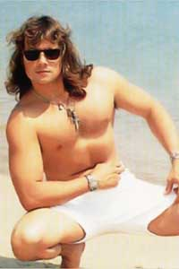
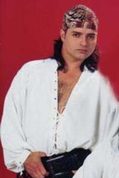
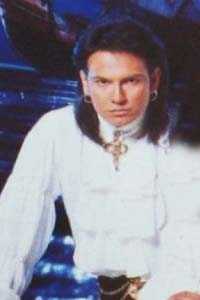
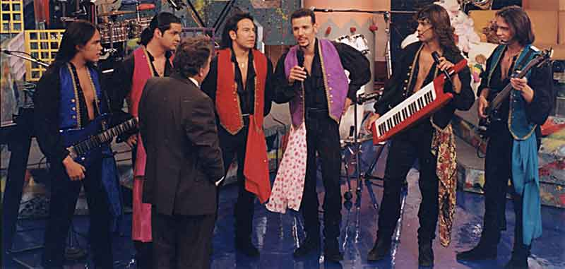

¡Bienvenido!
Somos Los Fantasmas del Caribe, una banda tropical de Venezuela nacida en el año 1989 que navega por toda américa llevando la buena música. ¡Nos encanta transmitir alegría y felicidad con nuestras canciones a donde sea que sonemos!
Integrantes
Nuestra banda esta compuesta por:
- Richie
Guitarra  Eddie
Eddie
Keytar- Kenny
Bajo - Luigi
Teclados - Gabriel
Batería - José
Percusiones
Nuestro estilo
Nos especializamos en el género tropical. Tratamos de llevar con nuestra música toda la alegría posible para estar en todas las fiestas de latinoamérica y que juntos la pasemos chévere.
No sólo nos destacamos con la música sino también con la parte visual. Nuestras coreografías acompañan a la música, ¡y esperamos que te enganches tú también y bailes junto a nosotros!
Somos una banda con gran trayectoria, ya con varios CDs lanzados, y temas muy populares como "Muchachita Triste" o "Por Una Lágrima".
La música tropical
La música tropical es propia de latinoamérica y nace en el caribe. Es un género musical nacido a partir de la salsa y que comenzó a aparecer en los años 50.
Es un género lleno de sabrosura y dulzura donde se utilizan compases lentos e instrumentos como el acordeón, flauta, tambores, maracas y teclados.